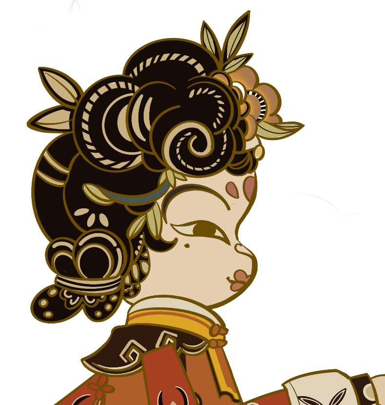
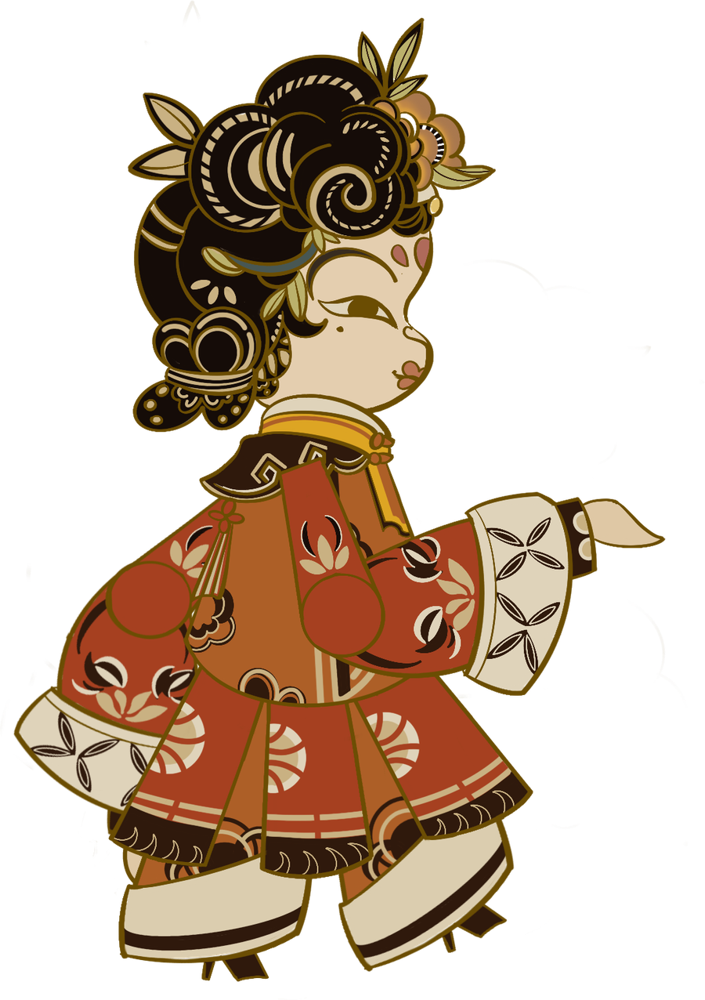
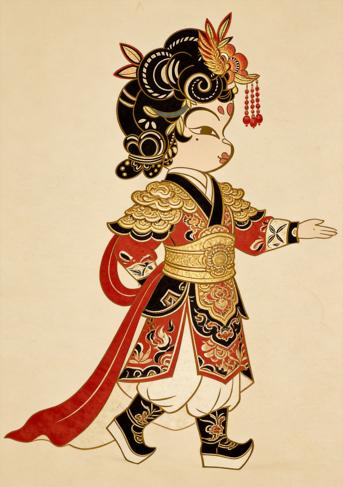
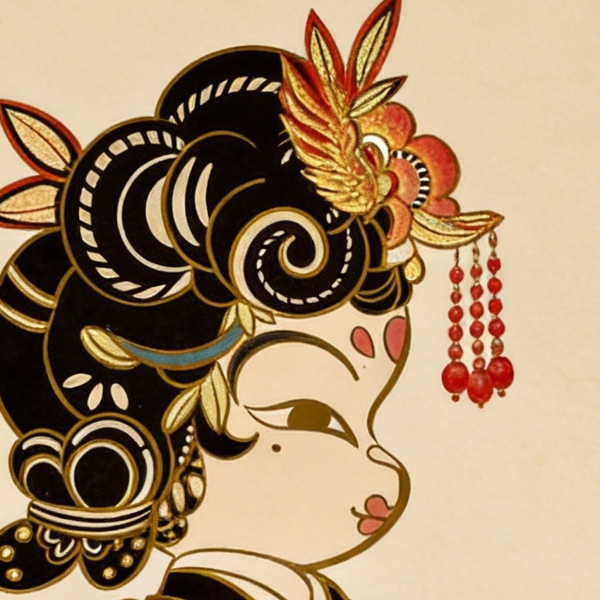
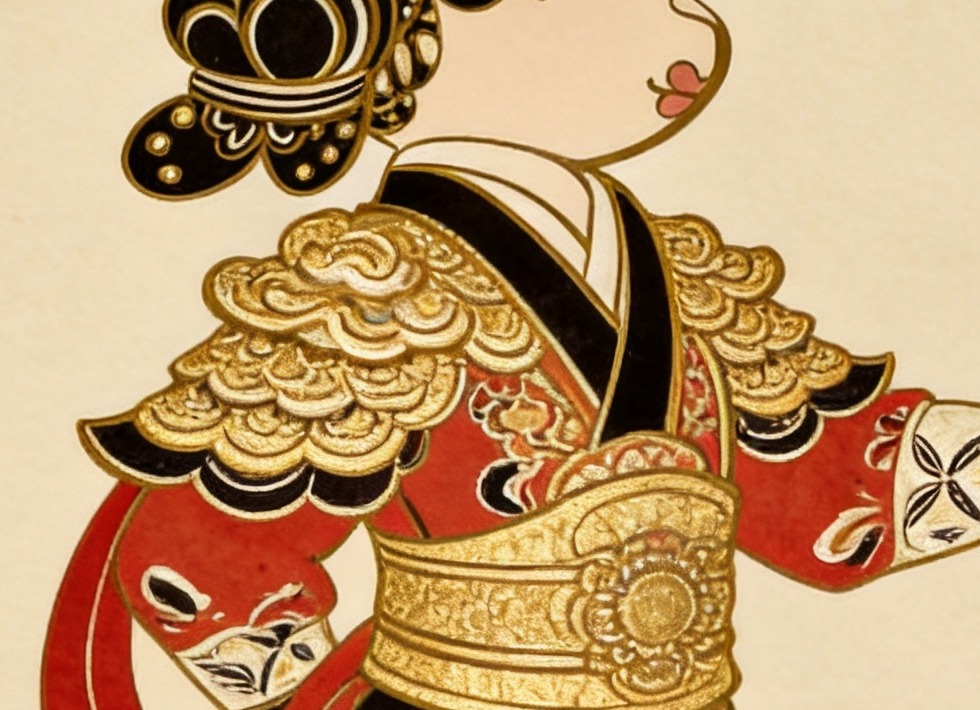
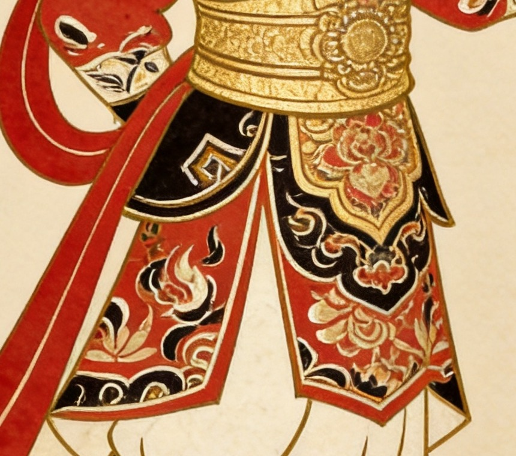
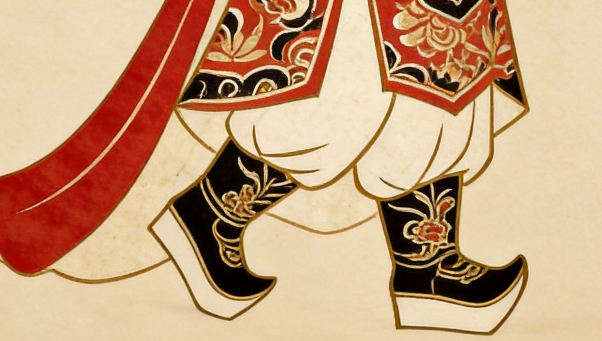
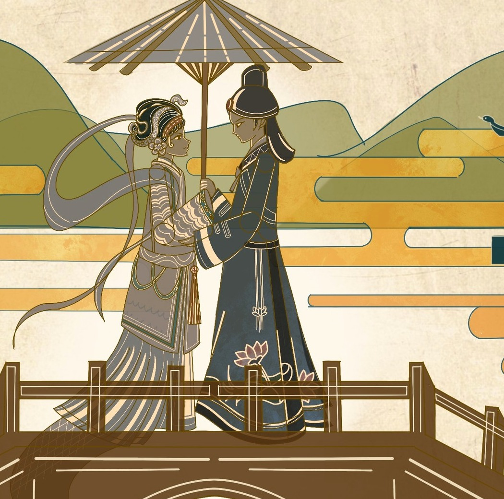
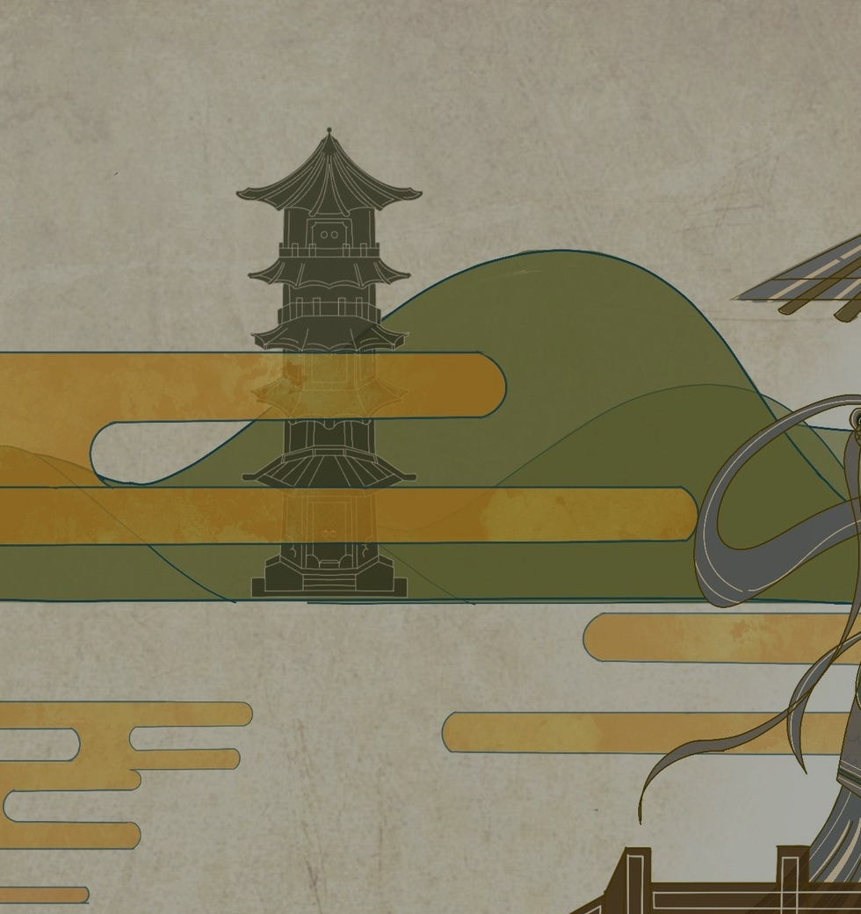
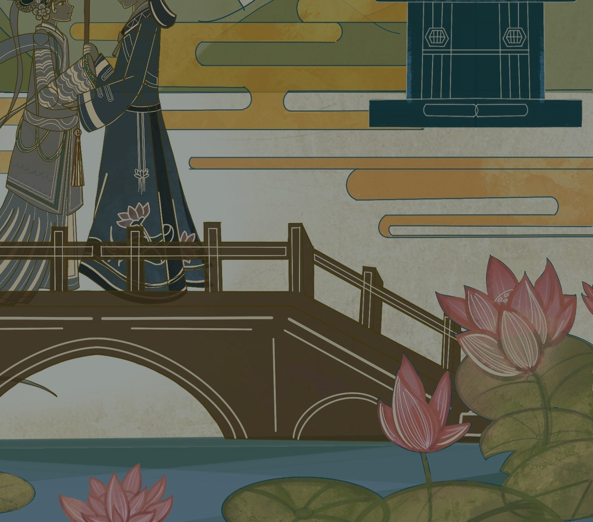

侧面先成立
影偶没有正面。所有情绪都必须在一个侧影里被读懂：她在看、在等、在退，还是在起势。
先做一具身体，再让它在灯下活一次。我们把剪纸与皮影，从“被观看的对象”重新拆成可以上手的三件事：选皮、扮相、牵线。
皮影真正动人的时刻，从来不在展柜里，而在灯后：一张牛皮被刻出呼吸，几根竹签让它有了骨节，一副嗓子与一阵锣鼓，才让它真正站起来。
所以我们没有把传统做成一层贴图。角色要被拆开，衣服要能重新穿戴，关节要能缀结，最后还要由玩家亲手牵着它完成一次表演。工艺不是背景知识，它本身就是玩法。
这是我们理解的“保护”：不是替传统决定它应该是什么样，而是把它交还给下一双愿意触摸、愿意试错、愿意再次演出的手。

一张皮，
—— 我们对“影戏”的最小定义
九处骨，
两根线，
一盏灯。
把制皮、画稿、镂刻、敷彩与缀结，变成可以被理解和操作的步骤。
行头不是皮肤。冠、肩、袖、裙的结构，会改变影偶的重心与动作。
每一次演出，都生成一页可以被重新点亮的影卷。
影城不是地图上的城。它由一方亮子、一罐灯油、一卷影卷和一群守影人组成。灯油烧的是记忆；影卷记的是故事；守影人负责在灯将熄时，把戏重新演一遍。
玩家是新入班的小镂匠。你在旧戏箱里找到一具褪色的影偶，修补她、替她重新做一身行头，再牵着她，把影城遗忘的戏一出一出演回来。
每当一个故事被重新演完，影城就多亮一盏灯。戏不是被“通关”的，而是被重新记住的。
头茬、云肩、水袖、裙门、翘头靴。每一件都能拆下、替换、重新缀结。角色的性格不只写在脸上，也写在轮廓、重心和行走时的摆动里。
影偶没有正面。所有情绪都必须在一个侧影里被读懂：她在看、在等、在退，还是在起势。
朱红、泥金、米白作为基色，让角色在暖光、逆光与暗场里都保持层次。
不靠密集印花，而靠大型镂空、留白与层叠纸片建立节奏。虚处也属于图案。
九处关节与两根签子，决定她如何点头、抬袖、转身与收势。

头茬 云肩 水袖 裙门 翘头靴开局时，她只有戏箱最底层的朱红旧衣。随着演出被完成、掌声累积，新的头面与行头才会解锁。它们不是换色皮肤：冠、肩、腰、裙、靴的剪裁都被重新设计。
戏箱最底层的一身旧衣。红得温厚，纹样克制，是她第一次登台时的样子。

赤金压住朱砂，黑缎收紧轮廓。华丽不是堆出来的，而是由更大的色块、更准确的刀口和更长的拖尾托起来的。
行头会改变影偶的轮廓、重量与摆动：长披帛扩大圆场的弧线，短战裙让开打更利落，高冠改变头部的惯性。玩家得到的不是一张新皮肤，而是一种新的表演手感。
01纸雕层次肩部由多层金色纸片叠合，边缘保留刀口与错位。
02大块留白红、黑、金三种主色先立住，细节只落在需要观看的地方。
03负空间镂空的孔洞与深色滚边共同塑形，让服装在灯下仍然轻盈。




游戏由三块屏组成：扮相台负责“成为谁”，操偶台负责“怎么动”，影卷负责“被记住”。玩家不是在关卡之间赶路，而是在同一方灯下，把一具影偶慢慢演活。
从旧戏箱里找到褪色的身体，补齐头茬、云肩、裙门与靴。
冠、肩、腰、裙逐件穿戴。行头会改变轮廓、重心与摆动。
双手在上，两根签子分别牵引颈与手，关节随线而动。
演出完成，把这一折留成可重演的影卷，等下一次灯亮。
完成一场演出后，赤霞金缕会进入衣箱。它改变的不只是颜色，还有袖、裙与靴的重量。

这一折被记住了。掌声不是分数，是灯油又添了一寸。


我们想让“非遗”先变成一件可以玩的事：先觉得这身行头好看，再发现它为什么这样裁；先觉得牵线好玩，再明白一个关节为什么必须留半厘松。
不再实时模拟关节动作，改为完整角色的定格展示。主签落在颈部，手签提住右腕，保留皮影戏被观看、被牵引的关系。
《白蛇传》是第一出完整影卷。它不是用来复刻剧情的背景板，而是三种表演尺度的容器：借伞的静、盗仙草的急、水漫金山的势。玩家在熟悉的传说里，学习如何控制一具影偶。
眼神、停顿与一把伞的距离。
步法、转身与一口气的急切。
水袖、群场与整台亮子的调度。
在一瞬间定住，让台下看清她是谁。
用步伐画出空间，让一方小台变成一座城。
让布料延迟半拍，情绪就有了余韵。
快、准、收得住，才不会散成一团。
所有“纸与灯”的质感，都建立在一套可拆解、可维护的资产结构上。技术不抢戏，它只负责让传统不掉帧。
头、身、裙、领、双手与双腿独立拆件，统一画布与 pivot，保证每次换装都能精确回到身体。
九处节点各自设置旋转轴心。动作不是逐帧画出来的，而是由关节、惯性与线绳一起生成。
Animator 负责循环身段，Timeline 负责过场、镜头与灯油变化，让一段表演有起承转合。
纸纹、暖光、暗角与空气尘点共同构成材质。影偶保留轻微的透光与不平整，才像被真正的手摸过。
我们并不认为一款游戏可以替代一门手艺。它更像一张新的戏票：让更多人先坐进台下，再走到灯后，最后愿意亲手摸一次皮、剪一刀、牵一次线。
把角色、行头、唱词与调度保存在可重演的影卷里，让一场戏不因灯灭而消失。
把制皮、画稿、镂刻、敷彩与缀结转成可体验的工序，让工艺知识成为可以动手的记忆。
用低门槛的搭配与牵线，让传统戏曲进入课堂与家庭，让下一双手先觉得好玩。
让传统不是被保存，
而是被继续使用。